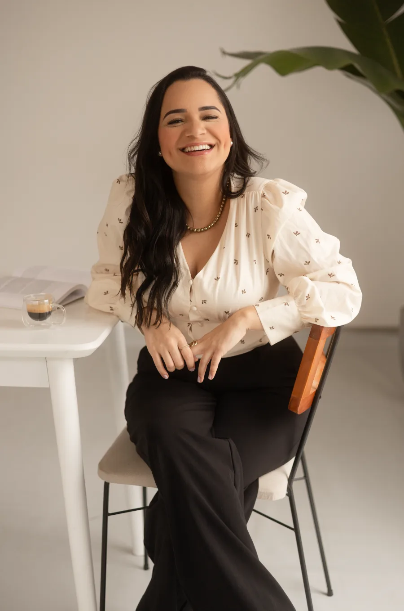
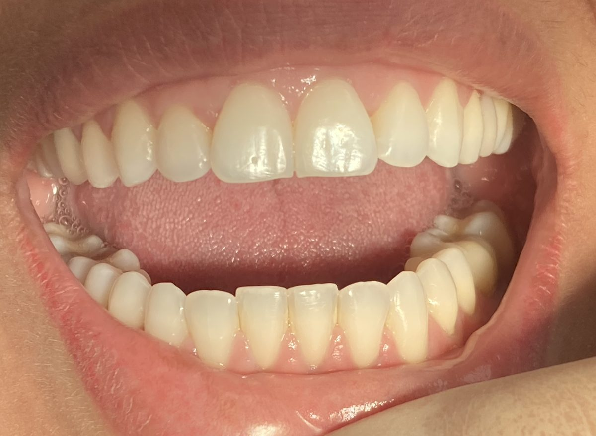
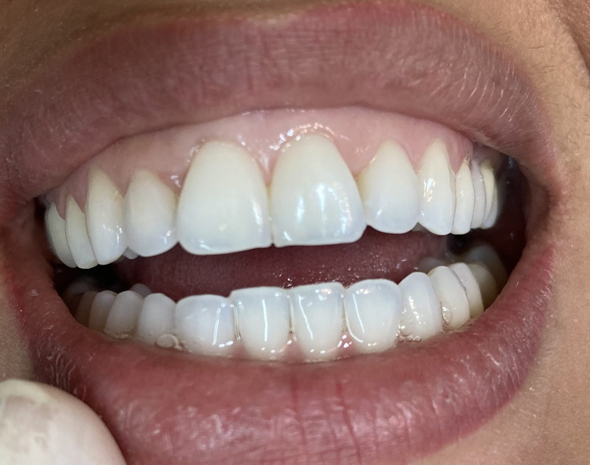
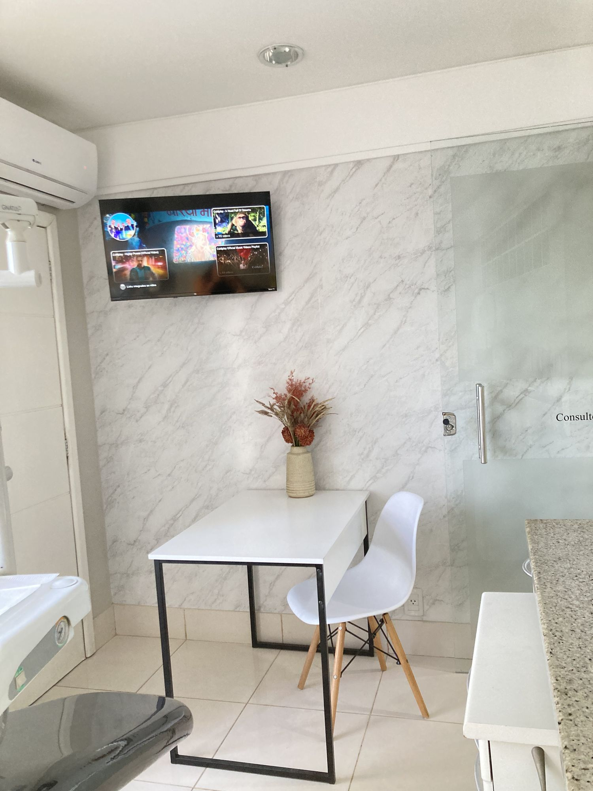

Alinhadores invisíveis.
Transparentes. Removíveis. Planejados no digital.
5,0 · 54 avaliações no GoogleCasos reais.
Paciente da SORRIE+, com alinhadores invisíveis e protocolo de clareamento.²


Caso clínico de paciente da SORRIE+, divulgado com autorização. Resultados variam conforme cada caso.³
Planejado na tela antes de começar.
Escaneamento digital e plano por escrito.
Agende sua avaliação com a Dra. Karine ›5,0
no Google
54
avaliações
Enseada do Suá. Sala 901.
R. José Alexandre Buaiz, 160, Ed. London Office Tower, Vitória-ES.
Como chegar ›
Perguntas frequentes.
Qual a diferença entre ClearCorrect e Invisalign?
São os dois sistemas de alinhadores invisíveis mais reconhecidos do mundo, com materiais e protocolos próprios. Somos certificados nos dois. Na avaliação, a Dra. Karine analisa seu caso e indica qual se encaixa melhor nos seus objetivos.
O clareamento está mesmo incluso no tratamento?
Sim. Na SORRIE+, o protocolo de clareamento é aplicado dentro do próprio alinhador ClearCorrect durante o tratamento, sem custo adicional. Você alinha e clareia ao mesmo tempo, com acompanhamento profissional.
Quanto tempo dura o tratamento com alinhadores invisíveis?
Varia conforme cada caso, normalmente entre 6 e 18 meses. Na consulta de avaliação, o escaneamento 3D permite visualizar uma previsão do resultado antes de iniciar.
Alinhador invisível funciona para adultos?
Funciona, e o adulto é hoje o principal público do tratamento. O dente se move pela remodelação do osso ao redor da raiz, um processo que não depende de crescimento e segue ativo na vida adulta. Não há idade máxima: o que pesa é a saúde da gengiva e do osso que sustentam cada dente, avaliada antes de definir a mecânica.
Atendem pacientes de fora de Vitória?
Sim. Atendemos pacientes de toda a Grande Vitória — Vila Velha, Serra e Cariacica — na unidade da Enseada do Suá, em Vitória-ES.